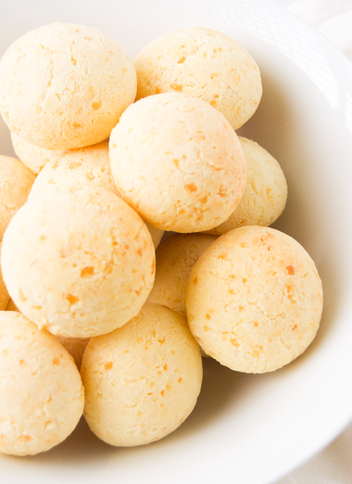

Pão de Queijo
(Brazilian Cheese Bread)

Description
This recipes comes from Brazilian Kitchen Abroad and is one of my all time favourite comfort foods. If you haven't tried this Brazilian cheese bread, you haven't lived a full life.
Ingredients
- 1 cup tapioca flour
- 1 cup grated mozzarella
- 1/4 cup milk
- 3 tbsp water
- 1 tbsp canola oil
- 1 egg
- Pinch of salt
Instructions
- Preheat oven to 375 degrees Fahrenheit.
- In a saucepan combine milk, water, oil and salt.
- Stir consistently and heat until mixture just begins to boil.
- Remove mixture from heat and add tapioca flour. Stir well to combine.
- Add egg and cheese. Stir well to combine.
- Shape the dough into small balls (approx. 12) and place them on a baking sheet.
- Bake 20 minutes or until golden brown.
- Enjoy!